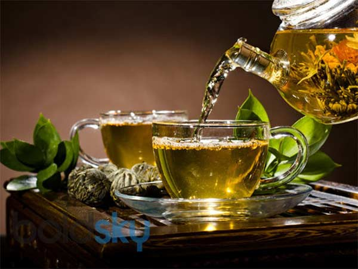
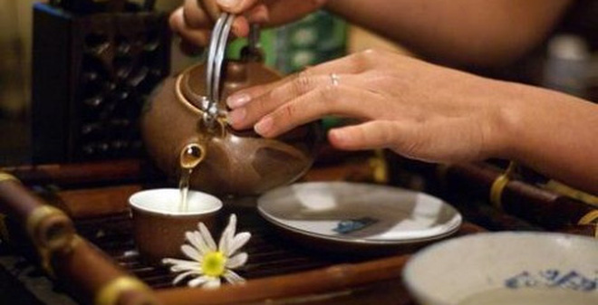
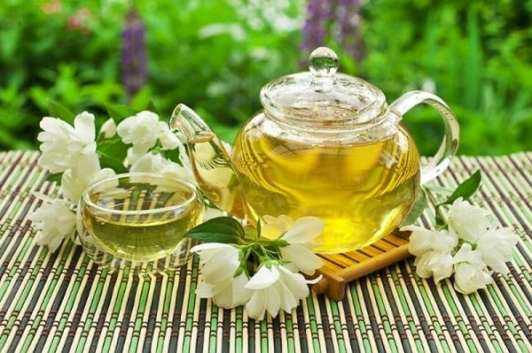
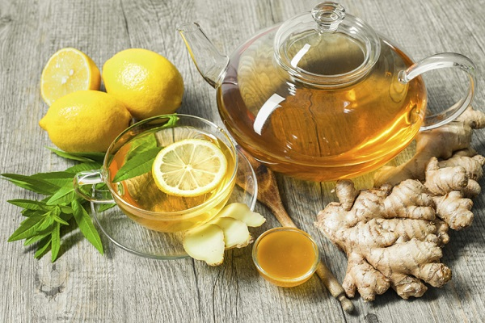

おすすめ
菊の花茶(trahoacuctrang)

菊花茶の飲み方
カップに菊花を4～5個入れ沸騰したお湯を注ぎます40～50秒前後で飲み頃です。
菊花4～5個はあくまで目安となります。
一度飲んでみて、ご自分の好みの濃さで調節してください。
温かくても美味しいお茶ですが、夏には作り置きして冷茶として飲んでも美味しいです。
蓮の花茶
（蓮の花茶）蓮芯茶 ベトナム特産の蓮の実の芯は本当の蓮の花茶の材料です。
本当の蓮の花茶の材料です【蓮芯茶】 お茶の葉と同じようにお飲みください。
番茶のように熱湯で、煎茶のようにぬるま湯で淹れて 飲み比べてください。
ベトナムではこれを飲むとよく眠れるとかとても健康に良いといわれています。
ジャスミン茶(trahoanhai)

中国緑茶にジャスミンの花の香りをうつし乾燥させ、
新しい花と入れ換えて香りをうつし乾燥させる。この作業を3回繰返したお茶です。
中華街の中国料理店で出されているタイプです。
アティチョ茶(trahoaatiso)

アーティチョークティーはすっきりとほのかに甘い飲み口が特徴です。
シナリンという成分を含み、ベトナムではお酒を飲んだ後によく飲まれています。
カップにティーバッグを入れ、沸騰したお湯を注ぎ、2～3分立ってからお召し上がり下さい。
緑茶

中国は全世界の緑茶の約75パーセントを供給する主要生産国である。
中国国内で生産される茶類のうち60パーセント以上を緑茶類が占め、
多くの人々が緑茶を常飲している。また、日本茶（煎茶、ほうじ茶、抹茶など）
はその多くが緑茶であり、緑茶は日本でもっとも良く飲まれている茶である。
ジンジャーティー

鼻に抜ける独特の風味が楽しめるジンジャーティーはいかがでしょうか。
ネパールで採れた新鮮な茶葉をはじめ、ジンジャー、
ピンクペッパーなどをブレンドすることで香り高く仕上がりました。
ティーパック入りなのでお湯を注ぐだけと簡単。冷え性の型、
風邪気味の方にもおススメのお茶です。
PAGE TOP